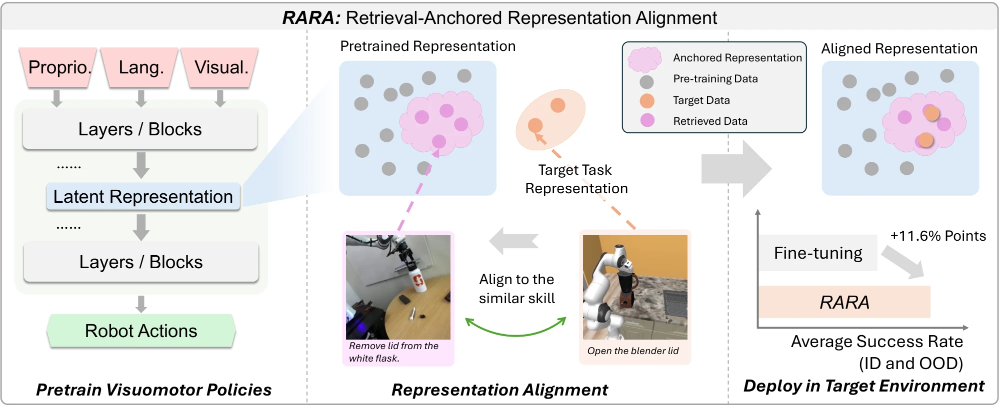
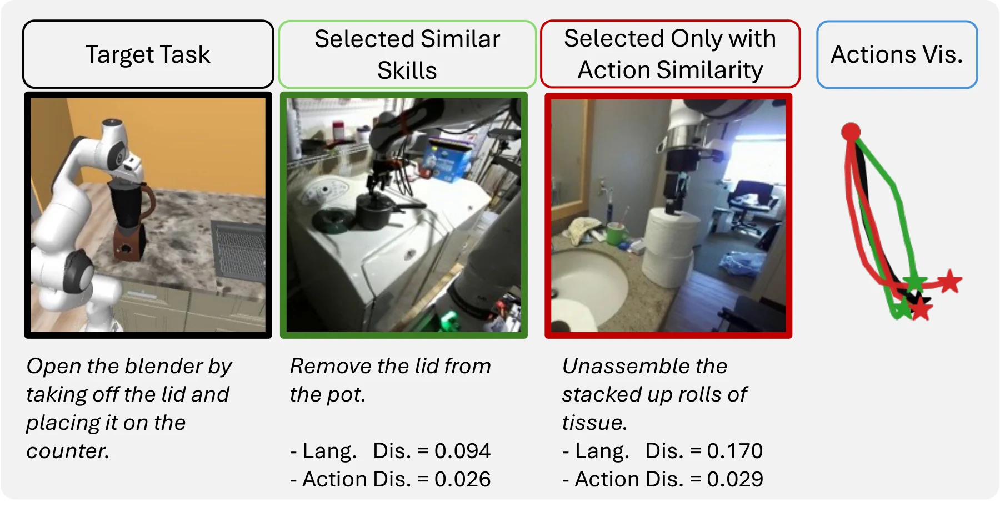
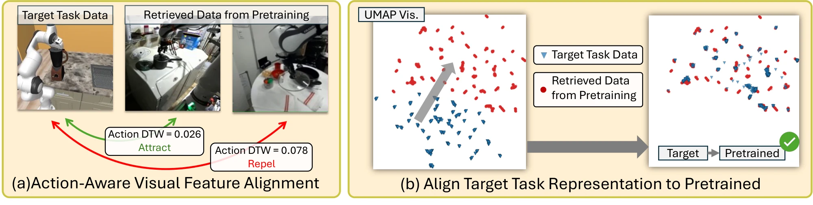
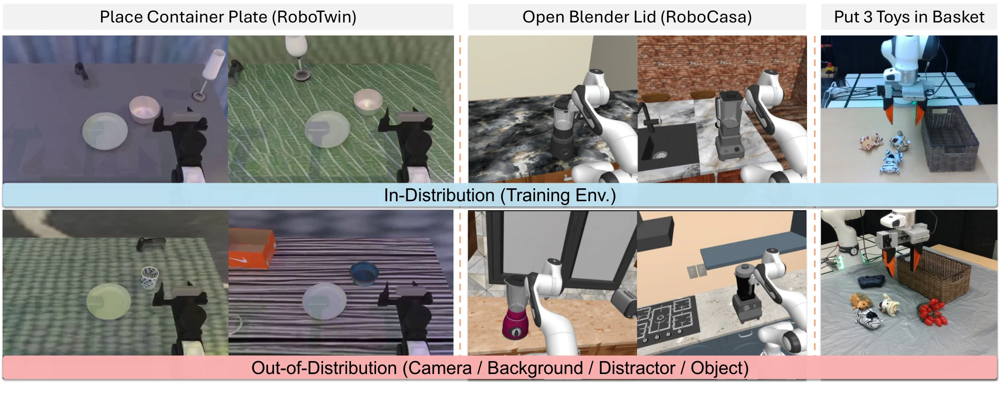

Pre-trained robot policies, such as Vision-Language-Action (VLA) models, provide a strong foundation for generalist robotic manipulation, but adapting them to new tasks with only a few demonstrations remains challenging. Directly fine-tuning a pre-trained policy often achieves strong in-distribution performance, yet it can distort the representations learned during pre-training and weaken the model's generalization ability under out-of-distribution shifts. We propose Retrieval-Anchored Representation Alignment (RARA), a two-stage adaptation method, to address this issue. First, RARA retrieves pre-training demonstrations with similar task intent and motion, and aligns the policy's representations of the target demonstrations with the pre-trained representations of the retrieved demonstrations. Second, RARA fine-tunes the policy on the target demonstrations while limiting how much its representations of the retrieved demonstrations change during fine-tuning. Experiments with Diffusion Policy and GR00T on 13 tasks in RoboTwin, RoboCasa, and on a real robot show that RARA improves the average success of fine-tuning by 9.5 points in-distribution and 13.6 points out-of-distribution, and outperforms all compared baselines.
RARA looks for relevance at two levels. A relevant demonstration performs the same type of task as the target, so RARA retrieves demonstrations whose task instructions are similar to the target's. A relevant frame is at the same step of the task as a target frame, so RARA pairs frames whose action chunks are close under dynamic time warping. Both levels are needed: action similarity alone can pair a target frame with a frame from a different task.

Stage 1: align to the pre-trained representation. Before fine-tuning, RARA pulls the representation of each target frame toward the pre-trained representation of retrieved frames with similar action chunks, and pushes it away from frames with different ones. The pre-trained policy has seen these stages of the motion under many visual conditions, so the target frames can reuse this robust representation instead of being fit from a few demonstrations.
Stage 2: fine-tune with an anchor. RARA then fine-tunes the policy on the target demonstrations while an anchor loss keeps its representations of the retrieved demonstrations close to their pre-trained values. The anchor acts on retrieved demonstrations rather than on the target observations, so it does not restrict how the policy adapts to the target task.

We fine-tune a Diffusion Policy pre-trained on about 2k RoboTwin demonstrations, and GR00T N1.7 pre-trained on DROID, on 13 target tasks in RoboTwin, RoboCasa and on a real Franka robot. Each policy is evaluated in the conditions covered by its demonstrations (ID) and under new camera poses, backgrounds, distractors, objects or object positions (OOD).

Average gain of RARA over fine-tuning across all 13 tasks.
| Method | RoboTwin (Diffusion Policy) | RoboCasa (GR00T N1.7) | ||
|---|---|---|---|---|
| ID | OOD | ID | OOD | |
| Fine-tuning (FT) | 67.4 | 47.3 | 69.2 | 44.3 |
| Co-FT | 64.4 | 47.6 | 67.1 | 43.7 |
| STRAP | 72.6 | 52.4 | 66.1 | 48.1 |
| BlindVLA | 67.9 | 47.2 | 68.5 | 46.8 |
| RARA (ours) | 76.0 | 58.3 | 74.0 | 55.5 |
Success rate (%), averaged over 4 RoboTwin and 5 RoboCasa tasks and three training seeds. Per-task results are in the paper.
All methods start from the same scene.
In each row, all methods start from the same scene.
Front view, with the wrist camera at the bottom right.
@article{kang2026rara,
title = {{RARA}: Robust Policy Fine-Tuning through Retrieval-Anchored
Representation Alignment for Robotic Manipulation},
author = {Kang, Xuhui and Lee, Sung-Wook and Zhuang, Yan and Zhong, Tianle and Kuo, Yen-Ling},
journal = {arXiv preprint},
year = {2026}
}